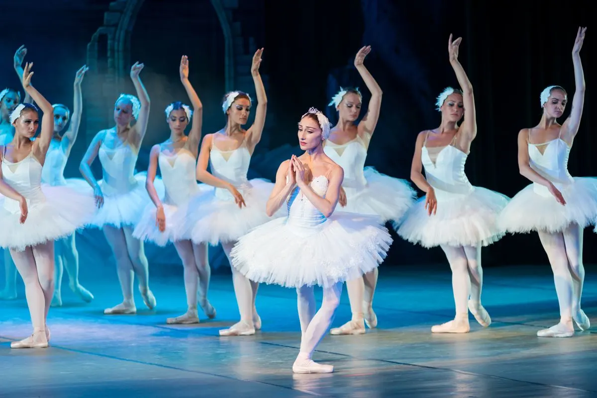

01
Misión
Crear, difundir y promover el arte de la danza con propuestas escénicas que impacten a la comunidad, formando bailarines e inspirando a nuevos públicos.

Programa de danza contemporánea
Movimiento que transforma. Una compañía que pertenece a la Corporación Cuerpo y Alma.
Ver obrasEl programa
Crear, difundir y promover el arte de la danza a través de propuestas escénicas innovadoras que impacten positivamente a nuestra comunidad. Ardila no es toda Cuerpo y Alma: es el brazo de danza contemporánea.
01
Crear, difundir y promover el arte de la danza con propuestas escénicas que impacten a la comunidad, formando bailarines e inspirando a nuevos públicos.
02
Ser una compañía referente en danza contemporánea, reconocida por la excelencia técnica, la creatividad narrativa y el compromiso social.
03
Impulsamos talento emergente, inclusión a través de las artes y formación de jóvenes artistas. Ardila Dance Company forma parte de Cuerpo y Alma.

Un viaje de relatos, seducción y resistencia, donde cada escena abre otra historia.

La tragedia clásica reescrita en danza: dos cuerpos, dos bandos y un amor que no cabe en el mundo.

Macondo hecho movimiento: memoria, linaje y realismo mágico en el cuerpo de la compañía.
Encuentros
Espacios para ver, aprender y compartir la danza con artistas invitados y la comunidad.

Próxima edición
Una semana de funciones, clases magistrales y encuentros abiertos alrededor del movimiento contemporáneo.
Inscribirme al festivalCompañías nacionales, maestros invitados y creadores emergentes.
Funciones, conversatorios, clases abiertas y muestra de talleres.
Teatro, estudio, plazas y salas alternativas.
Público, artistas y estudiantes. Cupos limitados.
 Técnica
TécnicaPeso, suelo y presencia escénica.
Frases, escenas y dramaturgia del movimiento.
 Comunidad
ComunidadMetodologías para escuelas y plazas.
Comunidad
Talleres, presentaciones abiertas y procesos de formación que acercan el movimiento a barrios, escuelas y plazas.

Vanguardia
Dimensión comunitaria
En Ardila Dance Company, programa de Cuerpo y Alma, creemos que la danza es una herramienta para el cambio social y la inclusión.
Llevamos la danza a comunidades vulnerables.
Estudiantes beneficiados en nuestros programas anuales.
"La danza me dio confianza y una familia."
Apoyamos la formación profesional de jóvenes talentos, cubriendo matrícula, vestuario y transporte.
Arte accesible en parques y plazas.
Colaboramos con ONG y escuelas locales.